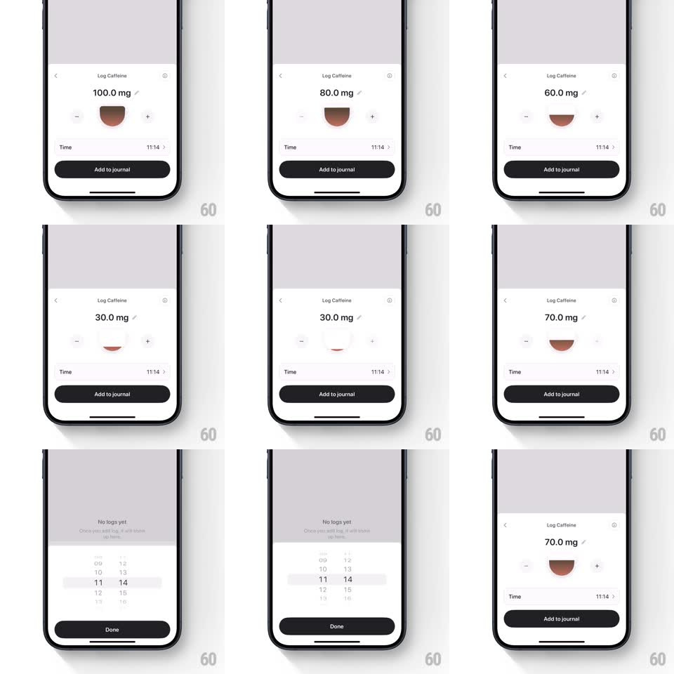

Media
Frame-by-frame

Rebuild this interaction 1:1: Bevel's caffeine logging sheet - +/- steppers drive a cup illustration whose coffee level rises and falls with springy liquid physics.

Rebuild this interaction 1:1: Bevel's caffeine logging sheet - +/- steppers drive a cup illustration whose coffee level rises and falls with springy liquid physics.
## Integration
Integration: stack-agnostic spec - springs given as stiffness/damping, timed motions as duration + curve; map every value to your framework and animation library of choice.
## Scene
A "Log Caffeine" sheet over a dimmed journal: a large "100.0 mg" value with an edit pencil, a coffee cup illustration between - and + stepper buttons, a Time row ("11:14"), and a black "Add to journal" button. Tapping Time opens a wheel picker with Done.
## Motion spec
Pattern: stepper-driven liquid fill.
- Each -/+ tap steps the value by 10 mg (shown with one decimal) and animates the cup's coffee level to value/max (~150mg full): the brown liquid surface moves with spring ~170/14 so it visibly overshoots and sloshes (surface tilts +-4 degrees during overshoot, settling in ~600ms).
- The value digits roll vertically on change (old digit slides up and out, new one in from below, 180ms).
- Steppers give tactile press feedback: scale 0.88 on touch-down, spring back (~500/25) on release; value changes fire on tap, repeat every 120ms on hold after a 350ms delay.
- Cup empty state (~0-10mg) shows only the cup outline with a faint residue line; coffee color deepens as level rises (light caramel to dark roast).
- Time row tap: the wheel picker slides up over the sheet (300ms, ease-out), wheels snap with detents, Done slides it away; the row's time crossfades to the new value.
- Add to journal: button press ripple, sheet slides down and the journal entry appears in the list behind with a highlight flash.
## Calibration
- The liquid never jumps: even a 100-to-30 jump animates through intermediate levels with one continuous spring.
- Slosh amplitude scales with step size: a hold-driven sweep sloshes more than a single tap.
## Reduced motion
Level tweens linearly over 200ms; no slosh tilt.
## Don't miss
- The cup is the value - the number and the liquid must never disagree at rest.
- Liquid renders inside the cup shape with a clipped wave edge, not a straight line, while sloshing.